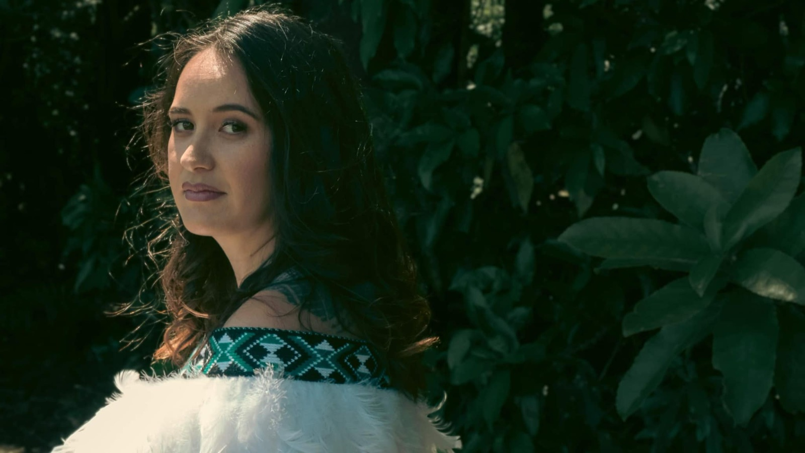

Fifteen years of movement, music and light. The portfolio is an index, not a slideshow — start anywhere.
The index
Selected work

The person behind the glass.
Ellison shoots movement, music and the water between islands. Based in Wellington, working anywhere the ferry, the van or a commission goes.
Clients include theatres, labels, festivals and families who want one honest wall of photographs.
Booking spring 2026 — two commissions open
Say hello
hello@ellison.photo